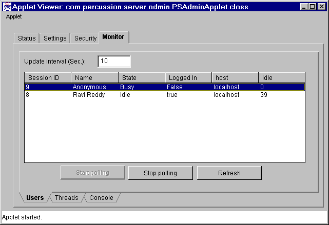
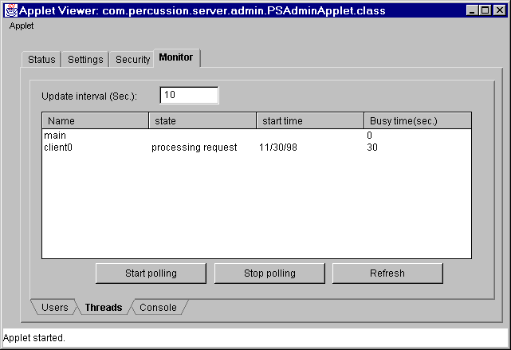
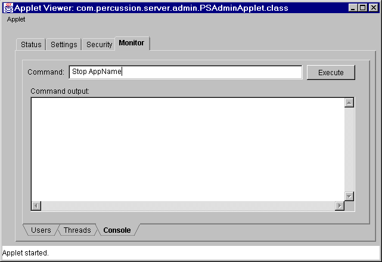

Module: Monitoring
This module helps monitor E2 server activities. Using this module it is possible to monitor the following activities of E2 server,
User statistics

The current user statistics will be in symantec.itoos.awt.MultiList control. collection of com.percussion.server.PSServerUserStats objects will be used to manage server statistics. Another Update button will be provided on this acreen to save the Update interval changes.
Thread statistics

All the currently running threads in the E2 server will be displayed in this screen. This information will be collected from E2 server memory and sent to admin client in an XML file. The XML file will be converted to collection of com.percussion.server.PSServerThreadStats objects to show it in the UI. An update button will be included in this screen to save the Update interval.
Remote console

This module will be used to execute some simple commands on E2 remotely. An action item will be defined for each of these commands. Some of the actions will be
The response to these commsnds from the server will be displyed in the output window.